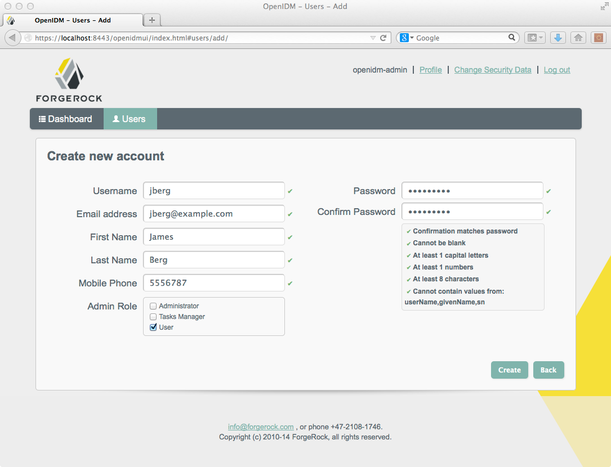

This chapter provides an overview of the first sample and how it is
configured. To see a listing and an overview of the rest of the samples
provided, see the README found in openidm/samples and in
the chapter More OpenIDM
Samples.
Install OpenIDM as described in the chapter on Installing OpenIDM Services.
OpenIDM comes with an internal noSQL database, OrientDB, for use as the internal repository out of the box. This makes it easy to get started with OpenIDM. OrientDB is not yet supported for production use, however, so use a supported JDBC database when moving to production.
If you want to query the internal noSQL database, you can download
OrientDB (version 1.6.6) from http://www.orientechnologies.com/download/.
You will find the shell console in the bin directory.
Start OrientDB console using either console.sh or
console.bat, and then connect to the running OpenIDM with
the connect command.
$ cd /path/to/orientdb-community-1.6.6/bin $ ./console.sh OrientDB console v.1.6.6 (build @BUILD@) www.orientechnologies.com Type 'help' to display all the commands supported. Installing extensions for GREMLIN language v.2.5.0-SNAPSHOT orientdb> connect remote:localhost/openidm admin admin Connecting to database [remote:localhost/openidm] with user 'admin'...OK orientdb>
When you have connected to the database, you might find the following commands useful.
Shows classes and records
Shows all users in the OpenIDM repository
Shows all activity audit records
This table is created when there is some activity.
Shows all reconciliation audit records
This table is created when you run reconciliation.
You can also use OrientDB Studio to query the default OrientDB
repository. After you have installed and started OpenIDM, point your browser
to http://localhost:2480/. The default database
is openidm and the default user and password are
admin and admin. Click Connect to
connect to the repository. For more information about OrientDB Studio, see the
OrientDB Studio documentation.
OpenIDM connects data objects held in external resources by mapping one object to another. To connect to external resources, OpenIDM uses OpenICF connectors, configured for use with the external resources.
When objects in one external resource change, OpenIDM determines how the changes affect other objects, and can make the changes as necessary. This sample demonstrates how OpenIDM does this by using reconciliation. OpenIDM reconciliation compares the objects in one object set to mapped objects in another object set. Reconciliation can work in write mode, where OpenIDM writes changes to affected objects, or in report mode, where OpenIDM reports on what changes would be written without making the changes. For a complete explanation of reconciliation and synchronization, see the section on Types of Synchronization in the Integrator's Guide.
This sample connects to an XML file that holds sample user data. The XML file is configured as the authoritative source. In this sample, users are created in the local repository to show you how you can manage local users through the REST APIs as well as through the OpenIDM UI.
You can also use OpenIDM without storing managed objects for users in the local repository, instead reconciling and synchronizing objects directly through connectors to external resources.
Furthermore, this sample involves only one external resource. In practice, you can connect as many resources as needed for your deployment.
You can find configuration files for the sample under the
openidm/samples/sample1/conf directory. As you review
the sample, keep the following in mind.
You must start OpenIDM with the sample configuration ($ ./startup.sh -p samples/sample1). For more information, see Section 2.3, “Running Reconciliation”.
OpenIDM regularly scans for any scheduler configuration files in the
conf directory.
OpenIDM's reconciliation service reads the mappings and actions for
the source and target users from
conf/sync.json.
Reconciliation runs, querying all users in the source, and then creating, deleting, or modifying users in the local OpenIDM repository according to the synchronization mappings.
OpenIDM writes all operations to the audit logs in both the internal
database and also the flat files in the openidm/audit
directory.
In some cases, the conf/authentication.json file
includes a PASSTHROUGH authentication module that
allows newly created users to log into the UI. For more information,
see the Integrator's Guide section on
Using Delegated Authentication.
For OpenIDM 3.0.0, PASSTHROUGH is
an alias for DELEGATED.
When you start OpenIDM with the
./startup.sh -p samples/sample1,
that sets &{launcher.project.location} to a value of
samples/sample1. As seen shortly, the
configuration files use that variable.
The following configuration files play important roles in this sample.
samples/sample1/conf/provisioner.openicf-xml.jsonThis connector configuration file serves as the XML file resource.
It is a copy of the file of the same name found in the
samples/provisioners directory.
In this sample, the connector instance acts as the authoritative source
for users. In the configuration file you can see that the
xmlFilePath is set to
&{launcher.project.location}/data/xmlConnectorData.xml.
The &{launcher.project.location}, in this case, is
sample/sample1.
For details on the OpenICF connector configuration files see Connecting to External Resources in the Integrator's Guide.
samples/sample1/conf/schedule-reconcile_systemXmlAccounts_managedUser.jsonThe sample schedule configuration file defines a reconciliation
job that, if enabled by setting "enabled" : true,
starts a reconciliation each minute for the mapping named
systemXmlAccounts_managedUser. The mapping is defined
in the configuration file, conf/sync.json.
{
"enabled" : false,
"type": "cron",
"schedule": "30 0/1 * * * ?",
"persisted" : true,
"misfirePolicy" : "fireAndProceed",
"invokeService": "sync",
"invokeContext": {
"action": "reconcile",
"mapping": "systemXmlfileAccounts_managedUser"
}
}For information about the schedule configuration see Scheduling Tasks and Events in the Integrator's Guide.
Apart from the scheduled reconciliation run, you can also start the reconciliation run through the REST interface. The call to the REST interface is an HTTP POST such as the following.
$ curl \ --cacert self-signed.crt \ --header "X-OpenIDM-Username: openidm-admin" \ --header "X-OpenIDM-Password: openidm-admin" \ --header "Content-Type: application/json" \ --request POST \ "https://localhost:8443/openidm/recon?_action=recon&mapping=systemXmlfileAccounts_managedUser"
If you do not want to bother with creating a self-signed certificate as noted in Restrict REST Access to the HTTPS Port, just substitute a -k or --insecure for --cacert self-signed.crt in the REST call (the curl command).
samples/sample1/conf/sync.jsonThis sample configuration file defines the configuration for
reconciliation and synchronization. The
systemXmlAccounts_managedUser is the mapping for the
reconciliation. This entry in conf/sync.json defines
the synchronization mappings between the XML file connector (source) and
the local repository (target).
{
"mappings": [
{
"name": "systemXmlfileAccounts_managedUser",
"source": "system/xmlfile/account",
"target": "managed/user",
"correlationQuery": {
"type": "text/javascript",
"source": "var query = {'_queryId' : 'for-userName',
'uid' : source.name};query;"
},
"properties": [
{
"source": "_id",
"target": "_id"
},
{
"source": "description",
"target": "description"
},
{
"source": "firstname",
"target": "givenName"
},
{
"source": "email",
"target": "mail"
},
{
"source": "lastname",
"target": "sn"
},
{
"source": "name",
"target": "userName"
},
{
"source": "password",
"target": "password"
}
{
"source" : "mobileTelephoneNumber",
"target" : "telephoneNumber"
},
{
"source" : "roles",
"transform" : {
"type" : "text/javascript",
"source" : "source.split(',')"
},
"target" : "roles"
}
],
"policies": [
{
"situation": "CONFIRMED",
"action": "UPDATE"
},
{
"situation": "FOUND",
"action": "IGNORE"
},
{
"situation": "ABSENT",
"action": "CREATE"
},
{
"situation": "AMBIGUOUS",
"action": "IGNORE"
},
{
"situation": "MISSING",
"action": "IGNORE"
},
{
"situation": "SOURCE_MISSING",
"action": "IGNORE"
},
{
"situation": "UNQUALIFIED",
"action": "IGNORE"
},
{
"situation": "UNASSIGNED",
"action": "IGNORE"
}
]
}
]
}Source and target paths that start with managed,
such as managed/user, always refer to objects in the
local OpenIDM repository. Paths that start with system,
such as system/xmlfile/account, refer to connector
objects, in this case the XML file connector.
For more information about synchronization, reconciliation, and
sync.json, see Configuring Synchronization in the
Integrator's Guide.
For additional examples related to scripting, see the Scripting Reference appendix in the Integrator's Guide.
Start OpenIDM with the configuration for sample 1.
$ cd /path/to/openidm $ ./startup.sh -p samples/sample1
Reconcile the objects in the resources, either by setting
"enabled" : true in the schedule configuration file
(conf/schedule-reconcile_systemXmlAccounts_managedUser.json)
and then waiting until the scheduled reconciliation happens, or by using the
REST interface, as shown in the following example.
$ curl \ --cacert self-signed.crt \ --header "X-OpenIDM-Username: openidm-admin" \ --header "X-OpenIDM-Password: openidm-admin" \ --header "Content-Type: application/json" \ --request POST \ "https://localhost:8443/openidm/recon?_action=recon&mapping=systemXmlfileAccounts_managedUser"
Successful reconciliation returns a reconciliation run ID, similar to the following:
{"_id":"2d87c817-3d00-4776-a705-7de2c65937d8"}To see what happened, you could look at the CSV format log file,
openidm/audit/recon.csv. If that file seems difficult
to decipher, read the guidance shown in the Integrator's Guide
section on
Querying the Reconciliation Audit Log.
After reconciliation, you can use the UI to review configured users.
Navigate to the URL where OpenIDM is installed. If it is local, navigate to
https://localhost:8443/openidmui. Use the OpenIDM user
credentials noted, where the default administrative username and password
are openidm-admin. When you login with these credentials
and select users, you should see the result of the reconciliation:
Alternatively, you can use the REST interface to display
all users in the local repository. Use a REST client to perform an HTTP
GET on the following URL:
https://localhost:8443/openidm/managed/user?_queryId=query-all-ids
with the headers "X-OpenIDM-Username: openidm-admin" and
"X-OpenIDM-Password: openidm-admin".
OpenIDM returns JSON data. Depending on the browser, you can use a REST client to display the JSON or download it as a file. Alternatively, you can use the following curl command to get the JSON response.
$ curl \
--cacert self-signed.crt \
--header "X-OpenIDM-Username: openidm-admin" \
--header "X-OpenIDM-Password: openidm-admin" \
--request GET \
"https://localhost:8443/openidm/managed/user?_queryId=query-all-ids"
{
"remainingPagedResults": -1,
"pagedResultsCookie": null,
"resultCount": 3,
"result": [
{
"_rev": "0",
"_id": "scarter"
},
{
"_rev": "0",
"_id": "bjensen"
},
{
"_rev" "0",
"_id" "joe"
}
]
}
If you created user joe, as described in the procedure
entitled To
Get Started With the OpenIDM REST Interface, you should
see the ID for that user somewhere in this list. If you did not include
"_id:joe" in the command to create user
joe, you would see a system-generated UUID in the list
instead of the specified ID.
Now try a RESTful GET of user
bjensen by appending the user ID to the managed user URL
(https://localhost:8443/openidm/managed/user/).
$ curl \
--cacert self-signed.crt \
--header "X-OpenIDM-Username: openidm-admin" \
--header "X-OpenIDM-Password: openidm-admin" \
--request GET \
"https://localhost:8443/openidm/managed/user/bjensen"
{
"_id" : "bjensen",
"_rev" : "1",
"mail" : "bjensen@example.com",
"sn" : "Jensen",
"passwordAttempts" : "0",
"lastPasswordAttempt" : "Tue Apr 15 2014 20:58:46 GMT-0800 (GMT-08:00)",
"address2" : "",
"givenName" : "Barbara",
"country" : "",
"city" : "",
"lastPasswordSet" : "",
"postalCode" : "",
"description" : "Created By XML1",
"accountStatus" : "active",
"telephoneNumber" : "1234567",
"roles" : [ "openidm-authorized" ],
"postalAddress" : "",
"stateProvince" : "",
"userName" : "bjensen@example.com",
"effectiveRoles" : [ "openidm-authorized" ],
"effectiveAssignments" : { }
}
In the OrientDB console, connect to the database, and then query the users and audit logs. The following shows edited excerpts from a console session querying OrientDB.
As defined in the mapping file conf/sync.json, the
sn and mail parameters correspond
to family name (surname) and email address, respectively.
To make it easier to view the records, the first query only requests three specific fields.
> connect remote:localhost/openidm admin admin Connecting to database [remote:localhost/openidm] with user 'admin'...OK > select sn,mail,description from managed_user ---+---------+--------------------+--------------------+-------------------- #| RID |familyName |email |description ---+---------+--------------------+--------------------+-------------------- 0| #-2:1|smith |joe@example.com |My first user 1| #-2:2|Jensen |bjensen@example.com |Created By XML1 2| #-2:3|Carter |scarter@example.com |Created By XML1 ---+---------+--------------------+--------------------+-------------------- 3 item(s) found. Query executed in 0.0040 sec(s). > select * from audit_activity ---+---------+-------------+----------+... #| RID |rev |action |status |... ---+---------+-------------+----------+... 0| #-2:1|0 |CREATE |SUCCESS |... 1| #-2:2|0 |CREATE |SUCCESS |... 2| #-2:3|0 |CREATE |SUCCESS |... 3| #-2:4|0 |CREATE |SUCCESS |... ... 18 item(s) found. Query executed in 0.0090 sec(s). > select * from audit_recon ----+------+------+-------+---------+---------+---------+... # |@RID |action|status |exception|entryType|situation|... ----+------+------+-------+---------+---------+---------+... 0 |#19:0 |null |SUCCESS| |start |null |... 1 |#19:1 |CREATE|SUCCESS| | |ABSENT |... 2 |#19:2 |CREATE|SUCCESS| | |ABSENT |... 3 |#19:3 |IGNORE|SUCCESS| | |UNASSI...|... 4 item(s) found. Query executed in 0.0070 sec(s).
This information is also available in the CSV format audit logs located
in the openidm/audit directory.
$ ls /path/to/openidm/audit/ access.csv activity.csv recon.csv
Add a user to the source connector XML data file to see reconciliation
in action. During the next reconciliation, OpenIDM finds the new user in the
source connector, and creates the user in the local repository. To add the
user, copy the following XML into
openidm/samples/sample1/data/xmlConnectorData.xml.
<ri:__ACCOUNT__>
<icf:__UID__>tmorris</icf:__UID__>
<icf:__NAME__>tmorris@example.com</icf:__NAME__>
<ri:password>TestPassw0rd#</ri:password>
<ri:firstname>Toni</ri:firstname>
<ri:lastname>Morris</ri:lastname>
<ri:email>tmorris@example.com</ri:email>
<ri:mobileTelephoneNumber>1234567</ri:mobileTelephoneNumber>
<ri:roles>openidm-authorized</ri:roles>
<icf:__DESCRIPTION__>Created By XML1</icf:__DESCRIPTION__>
</ri:__ACCOUNT__>Run reconciliation again, as described in the section on Running
Reconciliation. After reconciliation has run, query the
local repository to see the new user appear in the list of all users under
https://localhost:8443/openidm/managed/user?_queryId=query-all-ids.
$ curl \
--cacert self-signed.crt \
--header "X-OpenIDM-Username: openidm-admin" \
--header "X-OpenIDM-Password: openidm-admin" \
--request GET \
"https://localhost:8443/openidm/managed/user?_queryId=query-all-ids"
{
"result": [ {
"_id": "bjensen",
"_rev": "0"
}, {
"_id": "scarter",
"_rev": "0"
}, {
"_id": "joe",
"_rev": "0"
}, {
"_id": "tmorris",
"_rev": "0"
} ],
"resultCount": 4,
"pagedResultsCookie": null,
"remainingPagedResults": -1
}
Also look at the reconciliation audit log,
openidm/audit/recon.csv to see what took place during
reconciliation. This formatted excerpt from the log covers the two
reconciliation runs done in this sample.
"_id", "action",...,"reconId","situation","sourceObjectId", "targetObjectId","timestamp"; "7e...","CREATE",...,"486...", "ABSENT", "system/xmlfile/account/bjensen","managed/user/bjensen",...; "1a...","CREATE",...,"486...", "ABSENT", "system/xmlfile/account/scarter","managed/user/scarter",...; "47...","IGNORE",...,"486...", "UNQUALIFIED","" ,..., "managed/user/joe",...; "33...","UPDATE",...,"aa9...", "CONFIRMED","system/xmlfile/account/bjensen","managed/user/bjensen",...; "1d...","UPDATE",...,"aa9...", "CONFIRMED","system/xmlfile/account/scarter","managed/user/scarter",...; "0e...","CREATE",...,"aa9...", "ABSENT", "system/xmlfile/account/tmorris","managed/user/tmorris",...; "23...","IGNORE",...,"aa9...", "UNQUALIFIED","",..., "managed/user/joe",...;
The relevant audit log fields in this example are: action, situation,
sourceObjectId, and targetObjectId.
For each object in the source, reconciliation leads to an action on the
target.
In the first reconciliation run (the abbreviated
reconID is shown as 486...), the source
object does not exist in the target, resulting in an ABSENT situation and an
action to CREATE the object in the target. The object created earlier in the
target does not exist in the source, and so is IGNORED.
In the second reconciliation run (the abbreviated
reconID is shown as aa9...), after you
added a user to the source XML, OpenIDM performs an UPDATE on the user objects
bjensen and scarter that already exist
in the target, in this case changing the internal ID. OpenIDM performs a CREATE
on the target for the new user (tmorris).
You configure the action that OpenIDM takes based on an object's
situation in the configuration file, conf/sync.json.
For the list of all possible situations and actions, see the Configuring Synchronization chapter in the
Integrator's Guide.
For details on auditing, see the Using Audit Logs chapter in the Integrator's Guide.
You can add users to the local repository over the REST interface. The following example adds a user named James Berg.
Create james (UNIX).
$ curl \
--cacert self-signed.crt \
--header "X-OpenIDM-Username: openidm-admin" \
--header "X-OpenIDM-Password: openidm-admin" \
--header "Content-Type: application/json" \
--request POST \
--data '{
"_id":"jberg",
"userName":"jberg",
"sn":"Berg",
"givenName":"James",
"mail":"jberg@example.com",
"telephoneNumber":"5556787",
"description":"Created by OpenIDM REST.",
"password":"MyPassw0rd"
}' \
"https://localhost:8443/openidm/managed/user?_action=create"
{
"mail" : "jberg@example.com",
"sn" : "Berg",
"passwordAttempts" : "0",
"lastPasswordAttempt" : "Tue Apr 15 2014 21:05:12 GMT-0800 (GMT-08:00)",
"address2" : "",
"givenName" : "James",
"effectiveRoles" : [ "openidm-authorized" ],
"password" : {
"$crypto" : {
"type" : "x-simple-encryption",
"value" : {
"data" : "QYRcIS9FbksBEwyd4dNEpg==",
"cipher" : "AES/CBC/PKCS5Padding",
"iv" : "R5Kjs6jZZtqCockFCS6BfA==",
"key" : "openidm-sym-default"
}
}
},
"country" : "",
"city" : "",
"_rev" : "1",
"lastPasswordSet" : "",
"postalCode" : "",
"_id" : "jberg",
"description" : "Created by OpenIDM REST.",
"accountStatus" : "active",
"telephoneNumber" : "5556787",
"roles" : [ "openidm-authorized" ],
"effectiveAssignments" : { },
"postalAddress" : "",
"stateProvince" : "",
"userName" : "jberg"
}
Create james (Windows).
C:\> curl
--cacert self-signed.crt
--header "X-OpenIDM-Username: openidm-admin"
--header "X-OpenIDM-Password: openidm-admin"
--header "Content-Type: application/json"
--request POST
--data "{
\"_id\":\"jberg\",
\"userName\":\"jberg\",
\"sn\":\"Berg\",
\"givenName\":\"James\",
\"email\":\"jberg@example.com\",
\"telephoneNumber\":\"5556787\",
\"description\":\"Created by OpenIDM REST.\",
\"password\":\"MyPassw0rd\"
}"
"https://localhost:8443/openidm/managed/user?_action=create"
The output is essentially identical to that for UNIX.
OpenIDM creates the new user in the repository. If you configure a mapping to apply changes from the local repository to the XML file connector as a target, OpenIDM then updates the XML file to add the new user.
You can also add users through the UI, which uses the OpenIDM REST API. When you have logged into the UI as the OpenIDM administrator, the process is straightforward, as shown in the following figure.
|  |